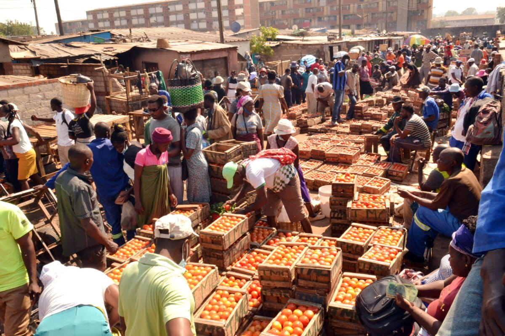
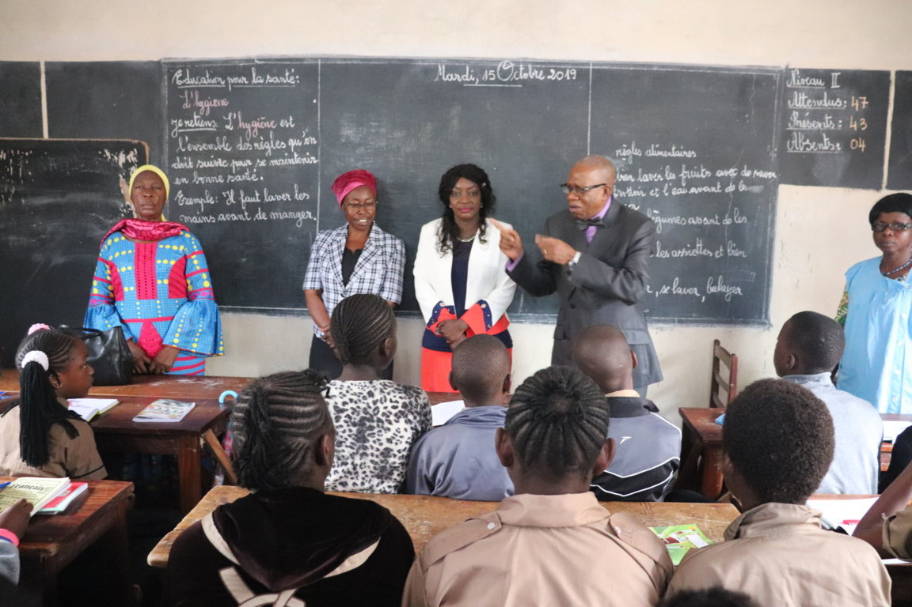
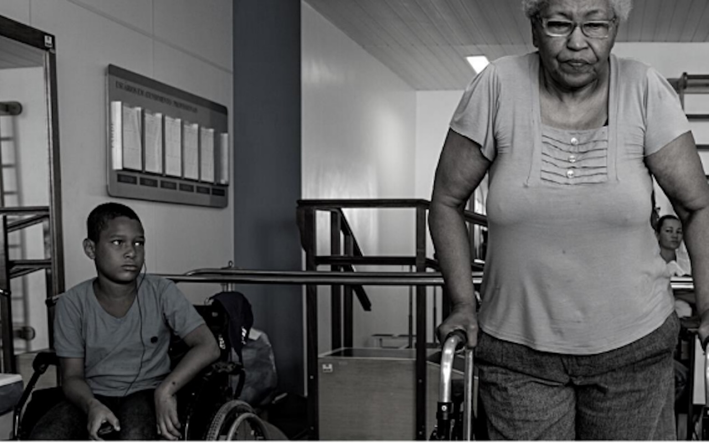
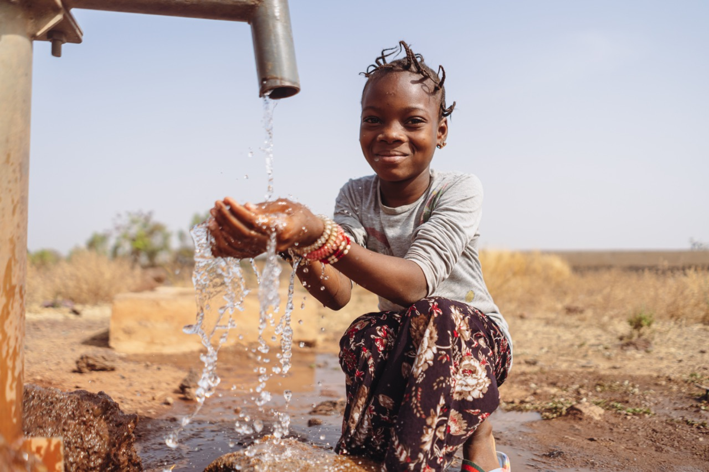
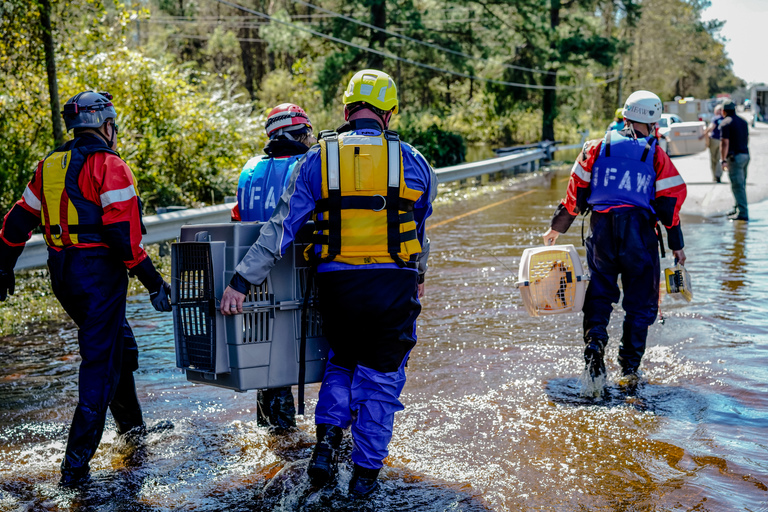
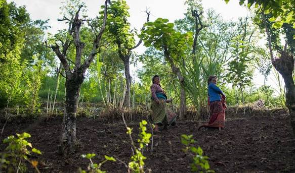

<link rel="stylesheet" href="style.css">
<main>

    <section class="hero-actions">
        <div class="container">
            <h1>Nos actions humanitaires</h1>
            <p>
                Chaque jour, notre association agit auprès des personnes les plus vulnérables.
                Grâce à nos bénévoles et à nos partenaires, nous apportons une aide concrète
                dans plusieurs domaines essentiels.
            </p>

        </div>

    </section>


    <section class="actions">
        <div class="container">

            <h2>Nos principales actions</h2>

            <div class="actions-grid">

                <article class="card">

                    

                    <h3>Distribution alimentaire</h3>
                    <p> Nous distribuons régulièrement des repas et des kits alimentaires aux familles les plus démunies.</p>

                </article>

                <article class="card">

                    

                    <h3>Education</h3>

                    <p>Nous accompagnons les enfants avec des fournitures scolaires et des programmes éducatifs. </p>

                </article>

                <article class="card">

                    

                    <h3>Santé</h3>

                    <p>Nos équipes organisent des campagnes de soins gratuits dans les zones défavorisées.</p>

                </article>

                <article class="card">

                    

                    <h3>Eau potable</h3>

                    <p>Nous réalisons des projets permettant aux populations d'accéder à une eau propre. </p>

                </article>

                <article class="card">

                    

                    <h3>Aide d'urgence</h3>

                    <p>Nous intervenons rapidement lors des catastrophes naturelles et des situations d'urgence. </p>

                </article>

                <article class="card">

                    

                    <h3>Développement durable</h3>

                    <p> Nous soutenons des projets agricoles et environnementaux pour améliorer durablement les conditions de vie.</p>

                </article>

            </div>

        </div>

    </section>


    <section class="statistics">
        <div class="container">

            <h2>Notre impact</h2>

            <div class="stats">

                <div class="stat">
                    <h3>15 000 +</h3>
                    <p>Repas distribués</p>
                </div>

                <div class="stat">
                    <h3>3 200 +</h3>
                    <p>Enfants aidés</p>
                </div>

                <div class="stat">
                    <h3>120</h3>
                    <p>Bénévoles</p>
                </div>

                <div class="stat">
                    <h3>48</h3>
                    <p>Communautés soutenues</p>
                </div>

            </div>

        </div>

    </section>

</main>